Display
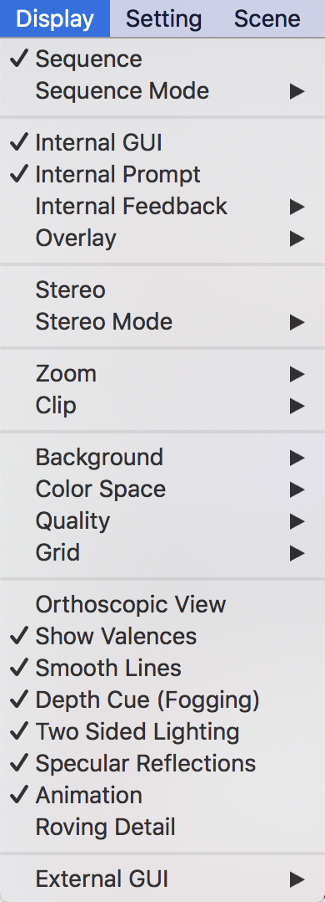
Sequence
Viewer上に表示されている生体分子オブジェクトの配列を表示します。デフォルトではOFFになっています。
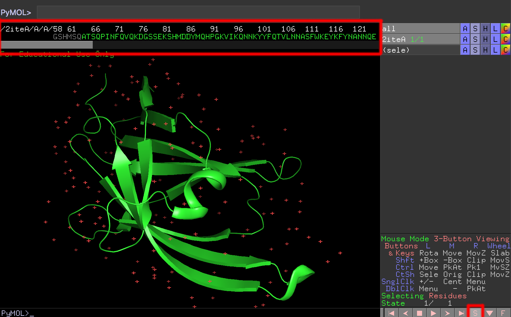
配列情報はViewer上部に表示されます。複数オブジェクトが存在する場合でも、まとめて表示することが可能です。また、この機能のON/OFFは画面右下のSボタンを押すことでも可能です。コマンドはset seq_view, 0/1です（0でOFF, 1でON）。
Sequence Mode
次に示す5つの選択メニューは配列情報自体の表示の変更に関わる設定です。いずれか1つのみ同時に設定できます。
Residue Codes
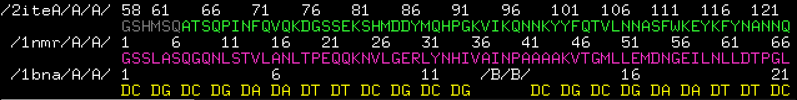
タンパク質アミノ酸を1文字表記で表示します。核酸の場合はDG, DAといった表記になります。デフォルトではこの設定がONになっています。コマンドはset seq_view_format, 0です。
Residue Names
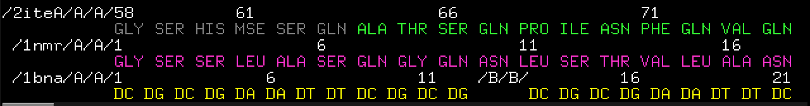
タンパク質アミノ酸を3文字表記で表示します。核酸の場合はDG, DAのままで特に変化しません。コマンドはset seq_view_format, 1です。
Chain Identifiers
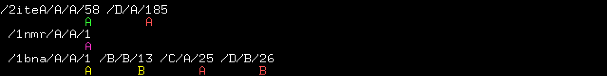
Chain識別子（A鎖、B鎖……）で表示します。コマンドはset seq_view_format, 3です。
Atom Names
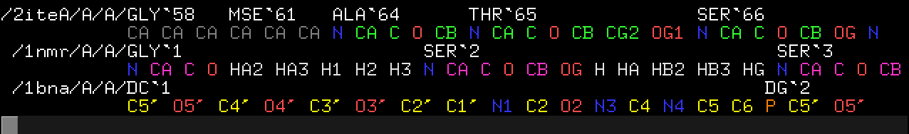
各アミノ酸残基または核酸塩基をさらに細分化し、原子名単位で表示することができます。特に、ある特定の場所の原子名を持つ原子だけを選択したいというときに、Selecting（マウスクリック時の選択単位）をAtomsに変更することと組み合わせることで簡単に選択するできるので重宝します。コマンドはset seq_view_format, 2です。
States
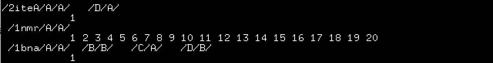
State番号を表示します。上の例では1NMRオブジェクトはNMRで構造解析されたデータであり、20 states存在するオブジェクトです。2iteAと1bnaAはともに結晶構造解析のデータであり、通常1 Stateのみになっています。コマンドはset seq_view_format, 4です。
次に示す4つの選択メニューは、配列表示欄の表示方法に関わる設定です。いずれか1つのみ同時に設定できます。例として、上記のResidue Codes表示をONにした場合の設定を掲載しています。
All Residue Numbers
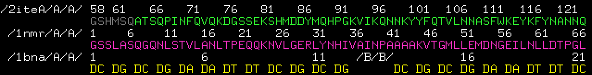
全てのオブジェクトについての配列番号を表示します。コマンドはset seq_view_label_mode, 2です。
Top Sequence Only
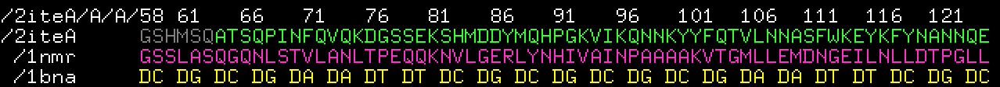
配列番号の表示を一番上のオブジェクトのもののみに限定します。同じオブジェクトを複数ロードしている場合には便利ですが、そうでない場合にしようすると、残基番号の位置を誤ってしまうことになるので、利用しないことが推奨されます。コマンドはset seq_view_label_mode, 1です。
Object Names Only
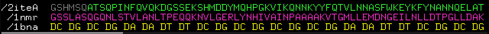
配列番号をすべて隠し、オブジェクト名だけを左端に表示します。コマンドはset seq_view_label_mode, 0です。
No Labels
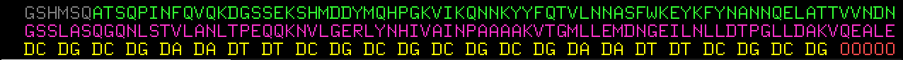
配列番号、オブジェクト名いずれも非表示にし、配列情報のみを表示します。
コマンドはset seq_view_label_mode, 3です。
以下の3つのメニューは、配列情報中に存在するミッシング残基についてのギャップマーク-の表示・非表示を設定します。いずれか1つのみ同時に設定できます。表示しているオブジェクト中にミッシング残基が存在しない場合はどれを選んでも表示に影響はありません。この機能はver. 2.3.0で実装されました。
ここでは例としてミッシング残基が存在するPDB: 2xwu、pdbフォーマットを表示して紹介します。Chain Bの153-155残基がミッシングになっています。
No Gaps
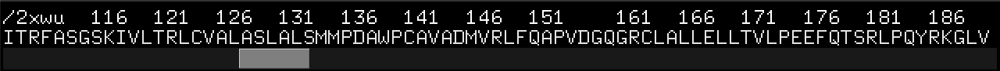
ギャップマークを非表示にします。
コマンドはset seq_view_gap_mode, 0です。
All Gaps
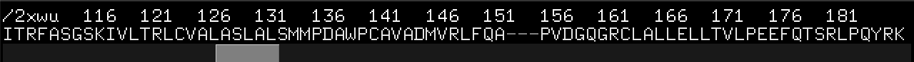
ギャップマークをすべて表示します。コマンドはset seq_view_gap_mode, 1です。
Single Gap
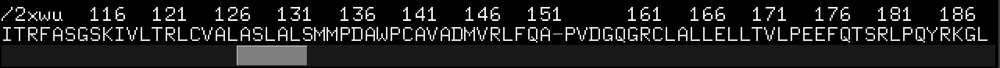
連続したミッシング残基がある場合、その箇所に付きギャップマークを1つだけ表示します。コマンドはset seq_view_gap_mode, 2です。
Internal GUI
Internal GUIの表示のON/OFFを切り替えます。OFFにすると以下のようにInternal GUIが非表示になります。デフォルトではONになっています。
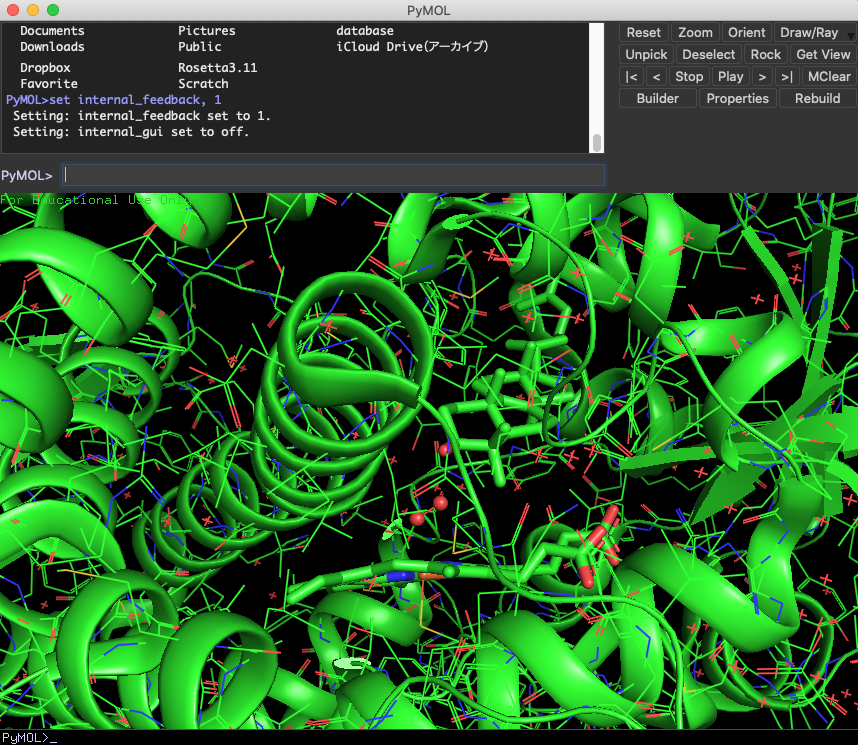
コマンドはset internal_gui, 0/1です（0でOFF, 1でON）。
Internal Prompt
Internal Promptの表示のON/OFFを切り替えます。Internal PromptとはPyMOL画面の下側に存在する入力欄です。
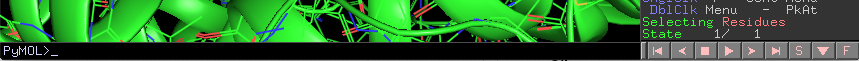
External GUIで入力する入力欄と実質的に機能は同じですが、ヒストリー機能（入力欄でキーボードの上キーを押すと過去に入力したコマンドを参照できる機能）は各入力欄で独立になっています。デフォルトではONになっています。コマンドはset internal_prompt, 0/1です（0でOFF, 1でON）。
Internal Feedback
Internal Feedbackでは、入力欄に入力したコマンドの結果を表示する行の数を設定できます。メニューからは0,1,3,5から選べるようになっています。デフォルトでは1となっています。例えば、5に設定すると以下の画像のようにViewerの下に5行までログが表示されるようになります。
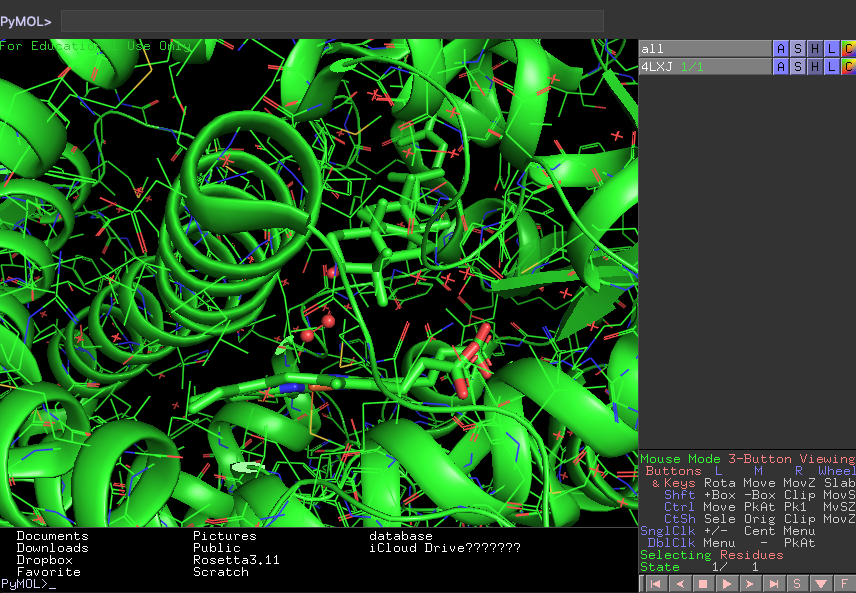
入力欄はInternal Prompt、External GUIのどちらに入力しても同じようにコマンドの結果を表示します。
コマンドはset internal_feedback, (val)です。(val)には0,1,3,5を含む、任意の正の整数値を設定できます。
Overlay
Overlayは、先程のInternal Feedbackの結果をViewer上に重ねて表示する行数の設定値です。メニューからは0,1,3,5から選べるようになっています。デフォルトでは0となっています。例えば5に設定すると以下の画像のようにViewerの下に5行まで結果を重ねて表示するようになります。
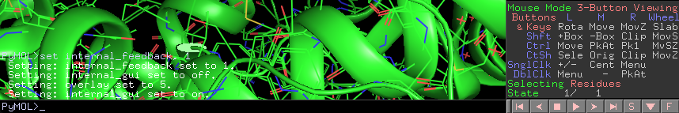
コマンドはset overlay, (val)です。(val)には0,1,3,5を含む、任意の正の整数値を設定できます。
Stereo
Stereoを選択すると、現在設定されているステレオモードに移行します。ステレオモードは分子を立体的に見るために便利なモードです。
これを選択すると対応したステレオモードで分子が表示されるようになります。デフォルトではCross-Eye Stereoモードに設定されているので、左右に分かれて表示されるようになります。
-
ステレオモード選択前
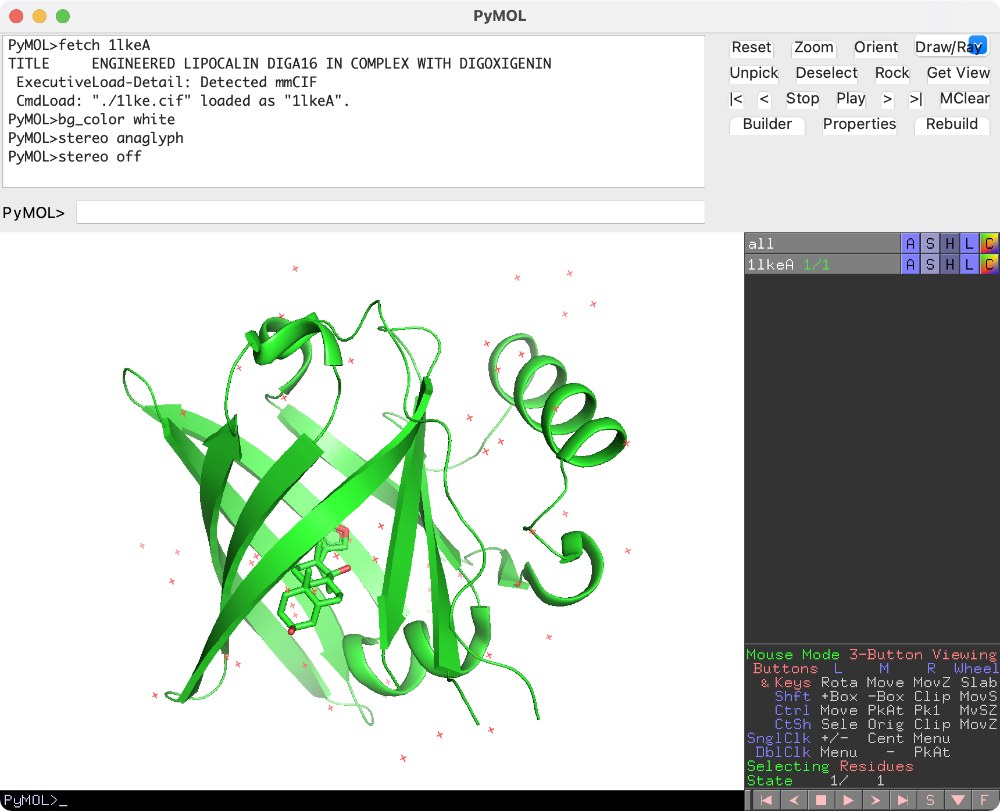 -
ステレオモード選択後（Cross-Eye Stereoモード）
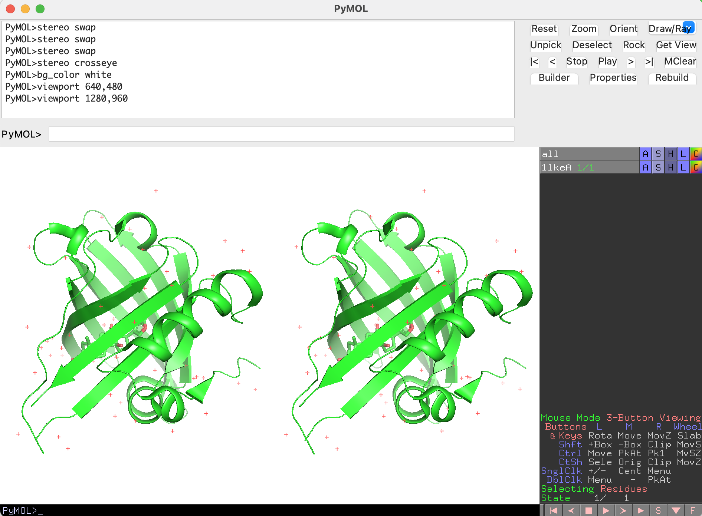
このモードを使うことで、論文などで時々見かける立体視の図を簡単に作ることができます。
コマンドはstereo, 0/1です（0でOFF, 1でON）。
Stereo Mode
Anaglyph Stereo
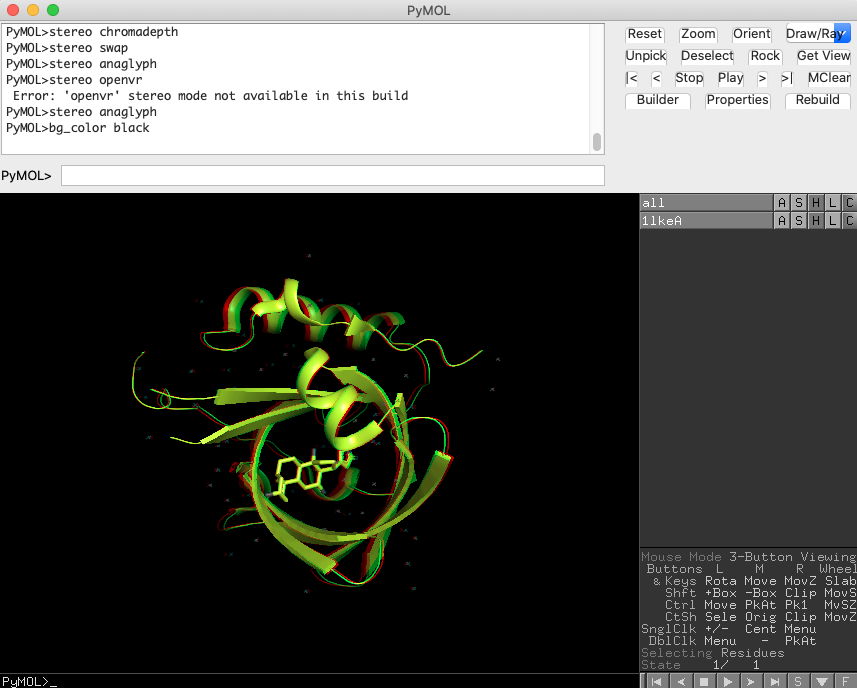
anaglyphモードは、一般的には左目に赤セロファン、右目に青セロファンを通したときに立体的に浮かび上がるような図への出力を行うモードです。いわゆる「赤青メガネ」を着用する状態で見ることを前提とする表示方法です。
コマンドはstereo, anaglyphです。
Cross-Eye Stereo
交差法による立体視用の図を出力するモードです。コマンドはstereo, crosseyeです。
Wall-Eye Stereo
コマンドはstereo, walleyeです。
Quad-Buffered Stereo
コマンドはstereo, quadbufferです。
Zalman Stereo
コマンドはstereo, byrowです。
OpenVR
コマンドはstereo, openvrです。
Swap Sides
コマンドはstereo, swapです。
Chromadepth
chromadepthモードは、画面に対する奥行きに対して自動的に色付けが変わる表示形式です。このモードにした状態で分子を回転させると、常に画面手前側が赤く、画面奥側が青色になるようにカラーリングが変化します。
コマンドはstereo, chromadepthです。
off
ステレオモードをオフにします。コマンドはstereo, offです。